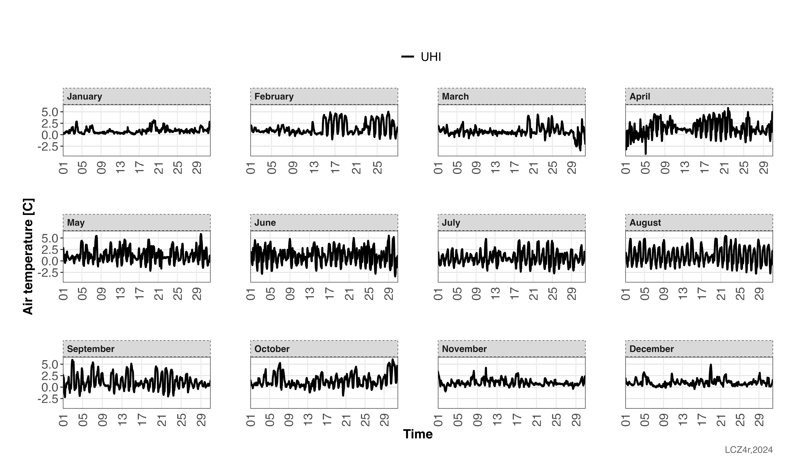
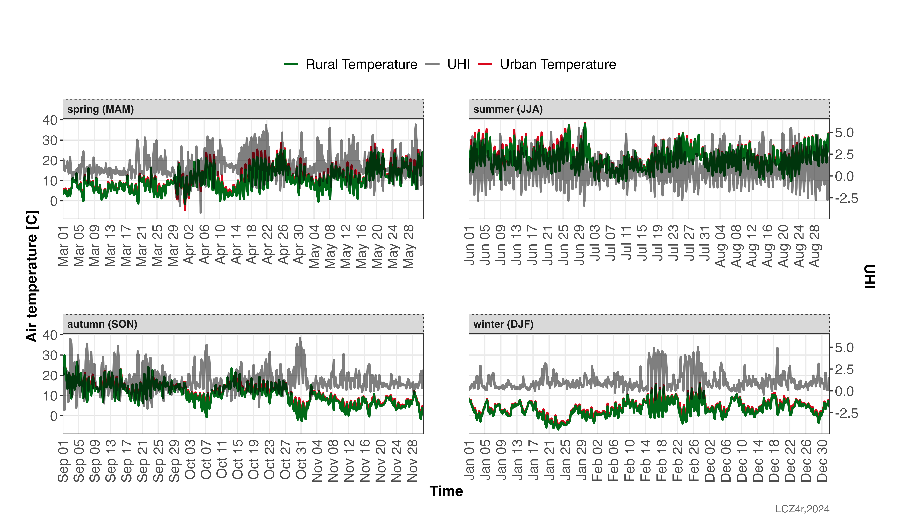
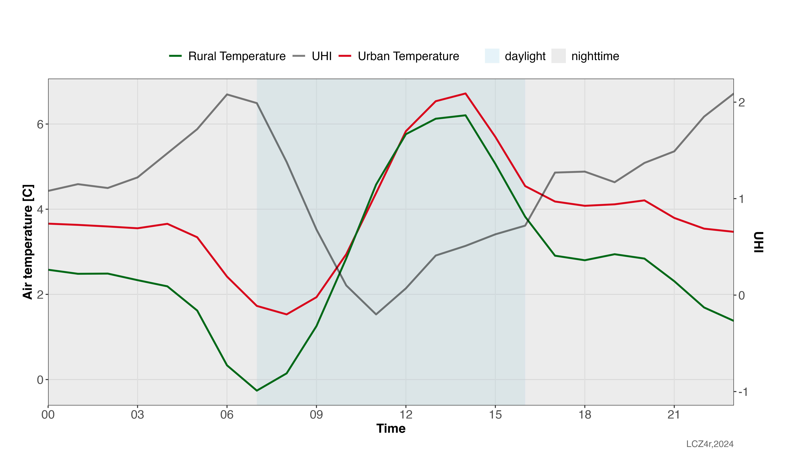
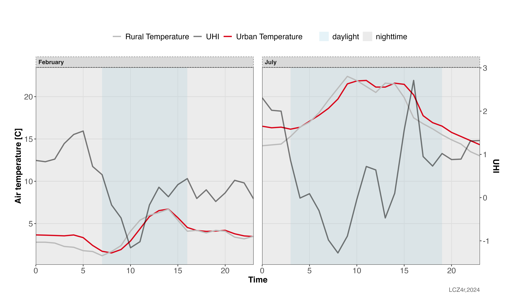

Urban Heat Island (UHI) Analysis
Max Anjos
November 06, 2024
Source:vignettes/local_func_uhi.Rmd
local_func_uhi.RmdIntroduction
The lcz_uhi_intensity() function is designed to
calculate the Urban Heat Island (UHI) intensity based on air temperature
measurements and Local Climate Zones (LCZ).
This guide demonstrates how to use the lcz_uhi_intensity() function to calculate and analyze UHI intensity using LCZ classes. The function supports two calculation methods:
- LCZ Method: Automatically identifies the LCZ build types, starting from LCZ 1 and progressing to LCZ 10, to represent the urban temperature, whilst it starts from LCZ natural LCZ (11-16) to represent the rural temperature
- Manual Method: Allows users have the freedom to select stations as references for the urban and rural areas.
# Get the LCZ map for your city
lcz_map <- lcz_get_map_euro(city="Berlin")
# Load sample data from LCZ4r
data("lcz_data")UHI time series
#Calculate hourly UHI intensity by months of 2019
lcz_uhi_intensity(lcz_map, data_frame = lcz_data,
var = "airT", station_id = "station",
time.freq = "hour",
method = "LCZ",
year = 2019,
by = "month")
UHI seasonality
#Calculate hourly UHI intensity by season of 2019, including the urban and rural temperatures
lcz_uhi_intensity(lcz_map, data_frame = lcz_data,
var = "airT", station_id = "station",
time.freq = "hour",
method = "LCZ",
year = 2019,
by = "season",
group = TRUE)
UHI daytime and nighttime
#Calculate diurnal cycle of UHI intensity
lcz_uhi_intensity(lcz_map, data_frame = lcz_data,
var = "airT", station_id = "station",
time.freq = "hour",
method = "LCZ",
year = 2019, month = 2, day = 6,
by = "daylight",
group = TRUE)
Using the manual method to calculate the UHI intensity
#Calculate diurnal cycle of UHI intensity by Feb and Jul of 2019 using the manual method
lcz_uhi_intensity(lcz_map, data_frame = lcz_data,
var = "airT", station_id = "station",
time.freq = "hour",
year = 2019, month = c(2, 7), day = 6,
method = "manual",
Turban = "bamberger",
Trural = "airporttxl",
by = c("daylight", "month"),
group = TRUE)